Generalized Gamma Spatial ARMA Conditional Model for Speckled Data
Theoretical Developments and Applications
Center for Exact and Natural Sciences (CCEN)
Federal University of Pernambuco (UFPE)
Advisor: Prof. Abraão D. C. Nascimento
Co-Advisor: Prof. Francisco J. A. Cysneiros
29 April 2025
Overview
- Generalized Gamma Spatial ARMA Conditional Model for Speckled Data and Applications
- Estimation of the equivalent number of looks in correlated SAR image
- Summarizing results
Generalized Gamma Spatial ARMA Conditional Model
Introduction
- Markov random fields (Whittle 1954) (Xie, Pierce, and Ulaby 2002)
- Spatial ARMA process (Bustos, Ojeda, and Vallejos 2009) (Cullis and Gleeson 1991) (Martin 1990)
- Non-gaussian spatial ARMA conditional models (Palm, Bayer, and Cintra 2022)
- Our proposal
Definition
Let {\(Z[n,m]\), for \(n =1, 2, \ldots, N\) and \(m = 1, 2, \ldots, M\)} be a random variable representing the pixels of an \(N\times M\) image, \(\mathcal{S}[n,m] = \left\{(k,l) \in \mathbb{Z}^2 : 1\leq k \leq n, 1\leq l \leq m\right\} - \{[n,m]\}\) be a strongly causal region at the pixel \([n,m]\) (Bustos, Ojeda, and Vallejos 2009), and \(z[n,m]\) be realization of \(Z[n,m]\). If we assume that the conditional distribution \(\left[Z[{n,m}] \mid \mathcal{S}[n,m]\right]\) follows a reparametrized generalized gamma distribution given in Silva, Almeida‐Junior, and Nascimento (2023), then its probability density function (pdf) \[\begin{align} \label{2DGGARMA} f\left(z[n,m]) \mid \mathcal{S}[n,m]\right) = \frac{\lvert\nu \rvert }{\Gamma(L)}\,&\left[\frac{\Gamma(L+1/\nu)}{\mu[n,m]\,\Gamma(L)}\right]^{L\,\nu}\,z[n,m]^{L\nu-1}\nonumber \exp \left\{ -%\,L^{1-L}\, \,\left[\frac{\Gamma(L+1/\nu)z[n,m]}{\mu[n,m]\,\Gamma(L)}\right]^{\nu} \right\}, \end{align}\] and cumulative density function (cdf) \[\begin{align} F\left(z[n,m]\mid \mathcal{S}[n,m]\right) = & \frac{1}{\Gamma(L)}\, \left\{ \begin{array}{l} \gamma\left(L,\left[\frac{\Gamma(L+1/\nu)}{\mu[n,m]\,\Gamma(L)}\,z[n,m]\right]^{\nu}\right),\text{ for }\nu>0,\\ \Gamma\left(L,\left[\frac{\Gamma(L+1/\nu)}{\mu[n,m]\,\Gamma(L)}\,z[n,m]\right]^{\nu}\right),\text{ for }\nu<0, \end{array} \right. \end{align}\]
where \(\Gamma(a,x) = \int^x_0 \, t^{a-1} \mathrm{e}^{- t} \mathrm{d}t\) is the lower incomplete gamma function and \(\Gamma(a, x) = \int^{\infty}_x \, t^{a-1} \mathrm{e}^{- t} \mathrm{d}t\) is the upper incomplete gamma function.
Conditional mean and variance
The associated conditional mean and variance are given by, respectively, \[\begin{align*} \mathbb{E}(Z[{n,m}]\mid\mathcal{S}[n,m]) = \mu[{n,m}], \text{and } \mathbb{V}\text{ar}(Z[{n,m}]\mid\mathcal{S}[n,m]) = \mu^2[n,m]\varphi, \end{align*}\] for \(\nu > -2/L\), where \(V(\mu[n,m]):=\mu^2[n,m]\) is a variance function and \[\varphi:=\left[\Gamma(L)\,\Gamma(L+2/\nu)/\Gamma^{2}(L+1/\nu)\,-\,1\right]\] is a dispersion parameter. Moreover, \(\varphi\) is also the squared coefficient of variation (SCV) on the G\(\Gamma\) distribution. In which, the dynamical component in the model is given by \[\begin{align*} g\left(\mu[n,m]\right) &=\alpha +\boldsymbol{x}^\top[n,m]\boldsymbol{\gamma} + \sum^{p_1}_{i=0}\sum^{p_2}_{j=0}\phi_{ij}\left\{g(y[n-i,m-j]) - \boldsymbol{x}^\top[n-i,m-j]\boldsymbol{\gamma}\right\}\\ &+\sum^{q_1}_{k=0}\sum^{q_2}_{l=0}\theta_{kl}\epsilon[n-k,m-l], \end{align*}\] where \(\phi_{ij}\) are the autoregressive parameters, \(\theta_{kl}\) are the moving average parameters, in which \(\phi_{00} = \theta_{00} = 0\), \(g:(0,\infty)\rightarrow \mathbb{R}\) is the link function strictly monotonic and twice differentiable, \(\boldsymbol{\gamma}= \left(\gamma_1,\gamma_2,\ldots,\gamma_r\right)^\top\) is a vector of parameters, \(\boldsymbol{x}[n,m] \in \mathbb{R}^k\) is the k-dimensional vector of the covariates at the position \([n,m]\), and \(\epsilon[n,m] = g(z[n,m]) - g(\mu[n,m])\) is an error (Benjamin, Rigby, and Stasinopoulos 2003).
Physical interpretation
The multiplicative model states that: intensity SAR, say \(Z\in \mathbb{R}_+\), is the product of two independent random variables that indicate backscatter, \(X\in \mathbb{R}_+\), and speckle noise, \(Y\in \mathbb{R}_+\): \(Z = X \times Y\). The speckle pattern is gamma-distributed with a unit mean. This way, assuming that \(Z[n,m]\sim \text{G}\Gamma(\nu,L,\mu[n,m])\), the following relationship is verified: \[\begin{equation} \underbrace{Z[n,m]}_{\text{Intensity}} \,=\, \underbrace{\mu[n,m]}_{\text{Backscatter signal}}\,\times\, \underbrace{ \frac{\Gamma(L)}{\Gamma(L+1/\nu)}\,Y^{1/\nu}[n,m] }_{\text{Part of speckle}}, \label{HH} \end{equation}\] where \(Y[n,m]\sim \Gamma(L,1)\). Note that one can take \(\nu=1\), the equation collapses in the gamma density reparametrized by the mean \(\mu[n,m]\).
Diagram of distributions
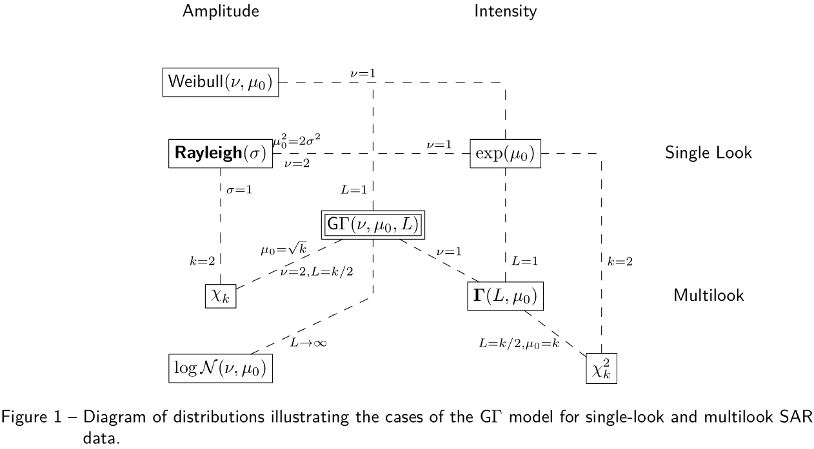
Prediction equation and accuracy measures
The estimated prediction equation of the spatial G\(\Gamma\)-ARMA is as follows \[\begin{align*} \hat{\mu}[n,m] \,=\,g^{-1}&\left(\,\hat{\alpha} +\boldsymbol{x}^\top[n,m]\hat{\boldsymbol{\gamma}} + \sum^{p_1}_{i=0}\sum^{p_2}_{j=0}\hat{\phi}_{ij}\left\{g(y[n-i,m-j]) - \boldsymbol{x}^\top[n-i,m-j]\hat{\boldsymbol{\gamma}}\right\}\right.\\ &\left.+\sum^{q_1}_{k=0}\sum^{q_2}_{l=0}\hat{\theta}_{ij}e[n-i,m-j]\right), \end{align*}\] for \(n=w+1,\ldots,N,\text{and }m=w+1,M.\) In this work, we use three performance metrics to evaluate the accuracy of the fitted models: \[\begin{align*} \text{MSE} &= \frac{1}{NM} \sum\limits_{n=w+1}^{N}\sum\limits_{m=w+1}^{M} e^2[n,m], \,\, \text{MAPE} = \frac{1}{NM} \sum\limits_{n=w+1}^{N}\sum\limits_{m=w+1}^{M} \frac{\lvert e[n,m] \rvert}{\lvert z[n,m] \rvert}, \,\, \end{align*}\] and \[\begin{align*} \text{MAE} &= \frac{1}{NM} \sum\limits_{n=w+1}^{N}\sum\limits_{m=w+1}^{M} |e[n,m]|, \end{align*}\] where \(e[n,m] = z[n,m] - \hat{\mu}[n,m]\). The mean square error (MSE) is scale-dependent, and the mean absolute error (MAE) and the mean absolute percentage error (MAPE) are not scale-dependent.
Simulation study scenarios and used measures
Table: True value of the parameters for each simulation scenario \[ \begin{array}{ccccccccc} \hline \text{Parameters} & \nu & \alpha & \phi_{01} & \phi_{10} & \phi_{11} & \theta_{01} & \theta_{10} & \theta_{11} \\ \hline \text{Scenario 1} & 1.03 & -3.29 & 0.14 & 0.13 & - & - & - & - \\ \text{Scenario 2} & 0.88 & 0.25 & 0.37 & 0.12 & 0.04 & - & - & - \\ \text{Scenario 3} & 0.89 & -0.61 & 0.11 & 0.64 & - & 0.09 & -0.31 & - \\ \text{Scenario 4} & 0.55 & -1.99 & 0.02 & 0.62 & -0.48 & 0.13 & -0.52 & 0.18 \\ \hline \end{array} \] We calculate the relative bias (RB), standard deviation (Std Dvt), and mean squared error (MSE) of the estimates using the Monte Carlo study with 10000 replicates. The measures are defined as \[\begin{align*} MSE &= \sum_{j=1}^{10000}\frac{\left(\hat{\delta}_j(i) - \delta(i)\right)^2}{10000},\,\, RB = \left(\sum_{j=1}^{10000}\frac{\hat{\delta}_j(i)}{\delta_j(i)}/10000 - 1\right)\times 100, \\ \textrm{and } Std\,Dvt &= \sum_{j=1}^{10000}\frac{\left(\hat{\delta}_j(i) - \bar{\delta}(i)\right)^2}{10000} \end{align*}\] where \(\hat{\delta}_{ij}\) is the \(j\)-th estimate of the \(i\)-th parameter of \(\boldsymbol{\delta}\), \(\delta_i\) is the true value of the \(i\)-th parameter, and \(\bar{\delta}_i = \sum_{j=1}^{10000}\hat{\delta}_{ij}/10000\).
Simulation study: Scenario 1
Table: Relative bias, standard error, and mean square error values of the parameter estimates for the process 2D G\(\Gamma\)-AR(1,1) to lake texture
| \(L=1\) | \(L = 3\) | ||||||
|---|---|---|---|---|---|---|---|
| Parameter | \(N = M\) | RB (%) | Std Dvt | MSE | RB (%) | Std Dvt | MSE |
| 7 | 7.94 | 1.0988 | 1.2755 | 8.41 | 0.9987 | 1.0739 | |
| \(\alpha\) | 11 | 2.58 | 0.6411 | 0.4181 | 2.42 | 0.6363 | 0.4112 |
| 17 | 0.72 | 0.4229 | 0.1794 | 0.04 | 0.4895 | 0.2396 | |
| 7 | 7.91 | 0.1603 | 0.0323 | 6.92 | 0.1491 | 0.0273 | |
| \(\nu\) | 11 | 2.59 | 0.0859 | 0.0081 | 2.32 | 0.0818 | 0.0073 |
| 17 | 0.99 | 0.0519 | 0.0028 | 0.83 | 0.0515 | 0.0027 | |
| 7 | -15.24 | 0.1363 | 0.0190 | -19.12 | 0.1418 | 0.0207 | |
| \(\phi_{01}\) | 11 | -4.24 | 0.0766 | 0.0059 | -5.59 | 0.0864 | 0.0075 |
| 17 | -1.38 | 0.0487 | 0.0024 | 0.18 | 0.0596 | 0.0036 | |
| 7 | -12.87 | 0.1342 | 0.0183 | -17.39 | 0.1402 | 0.0202 | |
| \(\phi_{10}\) | 11 | -4.27 | 0.0771 | 0.0060 | -4.68 | 0.0862 | 0.0075 |
| 17 | -0.98 | 0.0478 | 0.0023 | -0.48 | 0.0596 | 0.0035 |
Simulation study: Scenario 2
Table: Relative bias, standard error, and mean squared error values of parameter estimates for the process 2D G\(\Gamma\)-AR(1,1) to hybrid texture
| \(L=1\) | \(L = 3\) | ||||||
|---|---|---|---|---|---|---|---|
| Parameter | \(N = M\) | RB (%) | Std Dvt | MSE | RB (%) | Std Dvt | MSE |
| 7 | -50.23 | 0.3145 | 0.1147 | -8.66 | 0.1354 | 0.0188 | |
| \(\alpha\) | 11 | -19.52 | 0.1692 | 0.0310 | -3.03 | 0.0724 | 0.0053 |
| 17 | -8.05 | 0.1030 | 0.0110 | -0.94 | 0.0428 | 0.0018 | |
| 7 | 9.96 | 0.1394 | 0.0271 | 8.78 | 0.1279 | 0.0223 | |
| \(\nu\) | 11 | 3.27 | 0.0740 | 0.0063 | 2.89 | 0.0683 | 0.0053 |
| 17 | 1.16 | 0.0445 | 0.0021 | 1.19 | 0.0419 | 0.0019 | |
| 7 | -15.34 | 0.1432 | 0.0208 | -24.69 | 0.1578 | 0.0258 | |
| \(\phi_{01}\) | 11 | -4.59 | 0.0808 | 0.0066 | -9.88 | 0.0928 | 0.0088 |
| 17 | -2.73 | 0.0495 | 0.0025 | -2.83 | 0.0574 | 0.0033 | |
| 7 | -8.57 | 0.1394 | 0.0204 | -13.16 | 0.1539 | 0.0261 | |
| \(\phi_{10}\) | 11 | -3.75 | 0.0769 | 0.0061 | -4.71 | 0.0873 | 0.0079 |
| 17 | -1.57 | 0.0476 | 0.0023 | -2.07 | 0.0535 | 0.0029 | |
| 7 | -19.93 | 0.1468 | 0.0216 | -39.27 | 0.1632 | 0.0269 | |
| \(\phi_{11}\) | 11 | -10.13 | 0.0814 | 0.0066 | -12.67 | 0.0937 | 0.0088 |
| 17 | -4.40 | 0.0511 | 0.0026 | -8.19 | 0.0583 | 0.0034 |
Simulation study: Scenario 3
Table: Relative bias, standard error, and mean squared error values of parameter estimates for the process 2D G\(\Gamma\)-ARMA(1,1,1,1) to lake texture
| \(L=1\) | \(L = 3\) | ||||||
|---|---|---|---|---|---|---|---|
| Parameter | \(N = M\) | RB (%) | Std Dvt | MSE | RB (%) | Std Dvt | MSE |
| 7 | 33.91 | 0.7612 | 0.6221 | 3.85 | 0.4947 | 0.2453 | |
| \(\alpha\) | 11 | -0.41 | 0.6307 | 0.3978 | 0.98 | 0.3570 | 0.1274 |
| 17 | -20.20 | 0.6565 | 0.4461 | 0.91 | 0.1485 | 0.0221 | |
| 7 | 8.80 | 0.1527 | 0.0294 | 6.92 | 0.1462 | 0.0252 | |
| \(\nu\) | 11 | -0.40 | 0.0915 | 0.0084 | 0.58 | 0.0848 | 0.0072 |
| 17 | -5.86 | 0.1292 | 0.9341 | 0.75 | 0.0433 | 0.0019 | |
| 7 | 66.12 | 0.2108 | 0.0497 | 73.45 | 0.2114 | 0.0512 | |
| \(\phi_{01}\) | 11 | 45.69 | 0.1202 | 0.0170 | 36.02 | 0.1191 | 0.0158 |
| 17 | 38.44 | 0.0995 | 0.0919 | 17.10 | 0.0517 | 0.0030 | |
| 7 | -20.12 | 0.2451 | 0.0766 | -13.86 | 0.2357 | 0.0634 | |
| \(\phi_{10}\) | 11 | -11.59 | 0.1573 | 0.0303 | -8.28 | 0.1472 | 0.0245 |
| 17 | -7.20 | 0.1372 | 0.0897 | -4.24 | 0.0705 | 0.0057 | |
| 7 | -199.95 | 0.3322 | 0.1427 | -159.46 | 0.3716 | 0.1587 | |
| \(\theta_{01}\) | 11 | -55.59 | 0.1622 | 0.0288 | -40.62 | 0.1745 | 0.0318 |
| 17 | -32.66 | 0.1284 | 0.1653 | -23.98 | 0.0800 | 0.0069 | |
| 7 | -34.94 | 0.3575 | 0.1396 | 3.63 | 0.3853 | 0.1485 | |
| \(\theta_{10}\) | 11 | -23.09 | 0.2034 | 0.0465 | -12.00 | 0.2198 | 0.0497 |
| 17 | -12.54 | 0.1757 | 0.1077 | -8.14 | 0.1038 | 0.0114 |
Simulation study: Scenario 4
Table: Relative bias, standard error, and mean squared error values of parameter estimates for the process 2D G\(\Gamma\)-ARMA(1,1,1,1) to hybrid texture
| \(L = 1\) | \(L = 3\) | ||||||
|---|---|---|---|---|---|---|---|
| Parameter | \(N=M\) | RB (%) | Std Dvt | MSE | RB (%) | Std Dvt | MSE |
| 7 | 18.99 | 1.0016 | 1.1459 | 14.03 | 0.8185 | 0.7479 | |
| \(\alpha\) | 11 | 7.36 | 0.4366 | 0.2120 | 5.87 | 0.3820 | 0.1595 |
| 17 | 4.33 | 0.2416 | 0.0658 | 2.49 | 0.1976 | 0.0415 | |
| 7 | 16.33 | 0.1227 | 0.0231 | 18.81 | 0.1274 | 0.0269 | |
| \(\nu\) | 11 | 0.27 | 0.0490 | 0.0024 | 1.63 | 0.0455 | 0.0021 |
| 17 | -2.54 | 0.0299 | 0.0011 | -0.94 | 0.0265 | 0.0007 | |
| 7 | 227.80 | 0.2615 | 0.0705 | 9.02 | 0.2487 | 0.0618 | |
| \(\phi_{01}\) | 11 | 194.57 | 0.1376 | 0.0205 | -27.90 | 0.1302 | 0.0170 |
| 17 | 160.67 | 0.0761 | 0.0068 | -19.58 | 0.0706 | 0.0050 | |
| 7 | -25.20 | 0.2423 | 0.0831 | -20.25 | 0.2377 | 0.0723 | |
| \(\phi_{10}\) | 11 | -14.92 | 0.1188 | 0.0227 | -9.04 | 0.1030 | 0.0138 |
| 17 | -8.23 | 0.0587 | 0.0061 | -3.70 | 0.0453 | 0.0026 | |
| 7 | -8.56 | 0.2605 | 0.0696 | -9.17 | 0.2647 | 0.0720 | |
| \(\phi_{11}\) | 11 | 3.97 | 0.1464 | 0.0218 | -2.39 | 0.1516 | 0.0231 |
| 17 | 8.22 | 0.0915 | 0.0099 | -0.48 | 0.0914 | 0.0084 | |
| 7 | -38.22 | 0.4869 | 0.2395 | 29.95 | 0.5467 | 0.3003 | |
| \(\theta_{01}\) | 11 | -56.85 | 0.1852 | 0.0398 | -6.47 | 0.1927 | 0.0372 |
| 17 | -52.26 | 0.0997 | 0.0146 | -13.52 | 0.0974 | 0.0098 | |
| 7 | -11.39 | 0.4605 | 0.2155 | 13.52 | 0.5267 | 0.2824 | |
| \(\theta_{10}\) | 11 | -24.20 | 0.1702 | 0.0448 | -11.11 | 0.1716 | 0.0328 |
| 17 | -17.85 | 0.0887 | 0.0165 | -8.89 | 0.0792 | 0.0084 | |
| 7 | 23.51 | 0.4254 | 0.1827 | 25.97 | 0.4932 | 0.2454 | |
| \(\theta_{11}\) | 11 | 16.75 | 0.1786 | 0.0328 | 5.02 | 0.1989 | 0.0397 |
| 17 | 20.63 | 0.1047 | 0.0123 | -0.03 | 0.1097 | 0.0120 |
Moran’s index and Mahalanobis distance
The formula for the Moran index, in our case, is as follows: \[\begin{equation} I = \frac{\sum_{t_1\neq t_2}^P \sum_{t_2= 1}^P w_{t_1t_2} (Z_{t_1} - \bar{Z})(Z_{t_2} - \bar{Z})}{\sum_{t_1=1}^P (Z_{t_1} - \bar{Z})^2 }, \end{equation}\] where \(Z_t\) is the \(t\)-th element of \(\mathbf{Z} = (Z[1,1], Z[1,2],\ldots, Z[2,1],\ldots, Z[N,M])^\top\), \(\bar{Z} = 1/P \sum_{t=1}^P Z_t\), \(P = N \times M\) is the total number of pixels in the rectangular grid \(N \times M\), \(w_{t_1t_2}\) represents the spatial weight between pixels \(t_1\) and \(t_2\). Also, the Mahalanobis distance between two points in the parameter space is given by \[\begin{equation} d_M(\hat{\boldsymbol{\beta}}_1,\hat{\boldsymbol{\beta}}_0) = \sqrt{\left(\hat{\boldsymbol{\beta}}_1 - \hat{\boldsymbol{\beta}}_0 \right)^\top\hat{\boldsymbol{\Sigma}}^{-1}_{\hat{\boldsymbol{\beta}}_1}\left(\hat{\boldsymbol{\beta}}_1 - \hat{\boldsymbol{\beta}}_0 \right)}, \end{equation}\] where \(\hat{\boldsymbol{\beta}}_0\) is the estimated vector from the reference class, \(\hat{\boldsymbol{\beta}}_1\) is the vector of interest and \(\boldsymbol{\Sigma}_{\hat{\boldsymbol{\beta}}_1}=\boldsymbol{K}(\hat{\boldsymbol{\beta}}_1)\) is the covariance matrix defined at \(\hat{\boldsymbol{\beta}}_1\).
Application
SAR images from surroundings of Porto Alegre
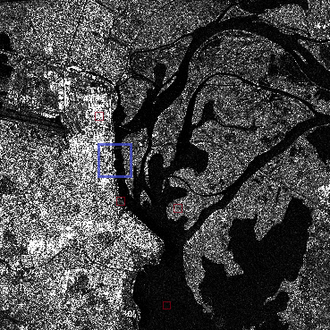 November 2023
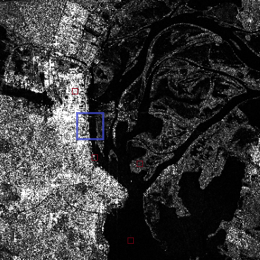 May 2024
Selected region and its prediction
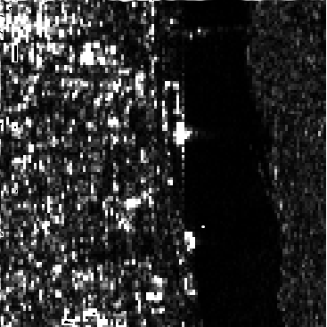
Figure 1: Intensity SAR image of selected region.
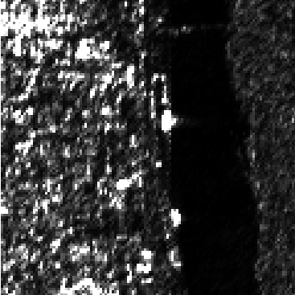
Figure 2: Estimated SAR image from 2D G\(\Gamma\)-ARMA
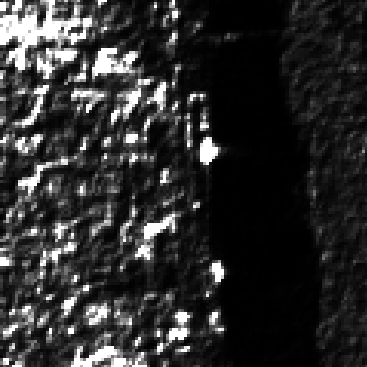
Figure 3: Estimated SAR image from 2D R-ARMA.
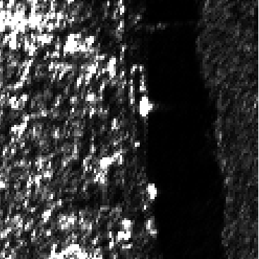
Figure 4: Estimated SAR image from 2D \(\Gamma\)-ARMA.
Parameter estimates of the spatial models on the selected region
| Estimates | 2D GΓ-AR | 2D R-ARMA | 2D Γ-ARMA |
|---|---|---|---|
| \(\hat{\alpha}\) (s.e.) | 0.2712 (0.0135) | 0.7517 (0.0095) | 0.2741 (0.0075) |
| \(\hat{\phi}_{11}\) (s.e.) | -0.0201 (0.0084) | -0.5205 (0.0088) | -0.2918 (0.0143) |
| \(\hat{\phi}_{01}\) (s.e.) | 0.3059 (0.0078) | 0.7074 (0.0087) | 0.6406 (0.0131) |
| \(\hat{\phi}_{10}\) (s.e.) | 0.6579 (0.0061) | 0.9208 (0.0041) | 0.6604 (0.0081) |
| \(\hat{\theta}_{11}\) (s.e.) | - | 0.3622 (0.0049) | 0.0187 (0.008) |
| \(\hat{\theta}_{01}\) (s.e.) | - | -0.4045 (0.0051) | -0.371 (0.0156) |
| \(\hat{\theta}_{10}\) (s.e.) | - | -0.4674 (0.0051) | -0.051 (0.0103) |
| \(\hat{\nu}\) (s.e.) | 0.6272 (0.0036) | - | - |
Accuracy measures for the spatial models
| Models | MSE | MAPE | MAE |
|---|---|---|---|
| 2D G\(\Gamma\)-AR | 42.9401 | 1.8684 | 0.583 |
| 2D R-ARMA | 263.9805 | 4.8344 | 1.5924 |
| 2D \(\Gamma\)-ARMA | 40.7256 | 1.8753 | 0.5875 |
Moran’s correlogram on the residuals
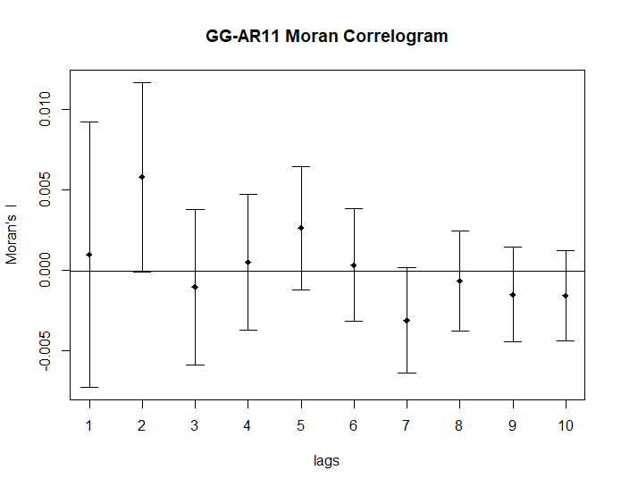
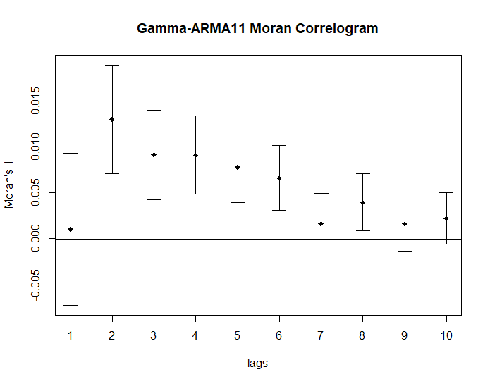
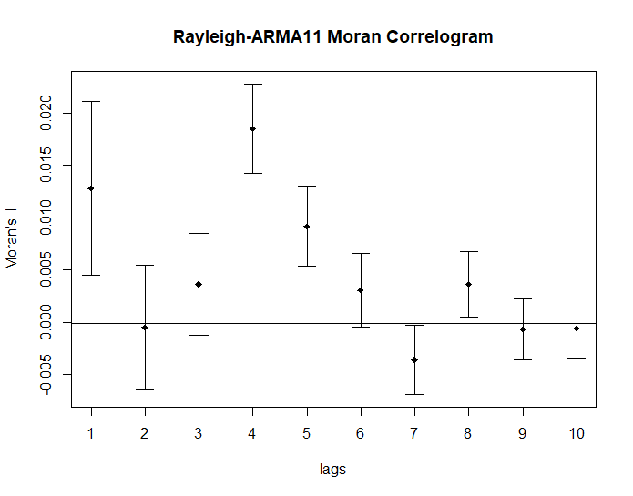
Flood detection
Area - Nov 2023
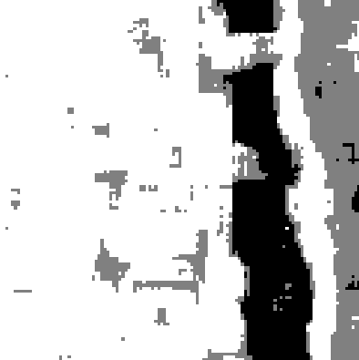
Classified Area - Nov 2023
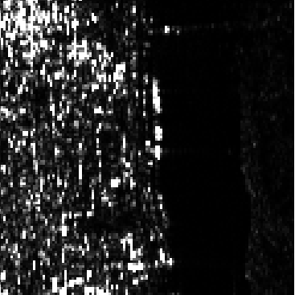
Area - May 2024
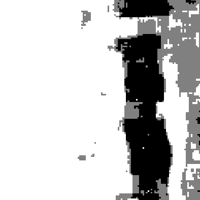
Classified Area - May 2024
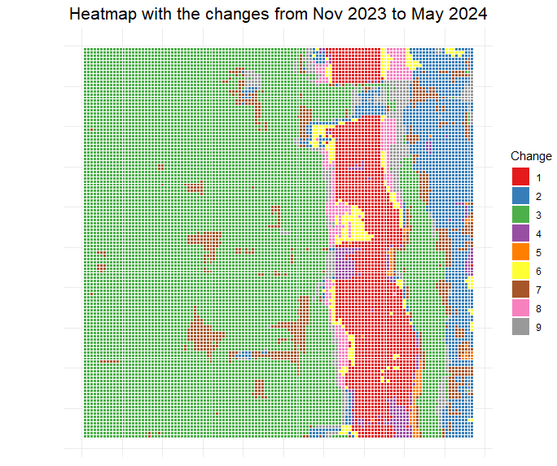
Changes: 1 - Water to Water, 2 - Forest to Forest, 3 - City to City, 4 - Water to Forest, 5 - Water to City, 6 - Forest to Water, 7 - Forest to City, 8 - City to Water, and 9 - City to Forest.
Flooded area
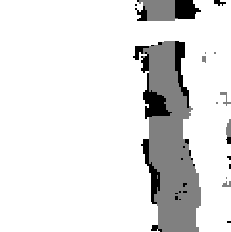
Flood detection in the selected region
Conclusion
- Proposing the 2D G\(\Gamma\)-ARMA model, its theoretical properties, and physical interpretation.
- The model can describe both amplitude (single look or multilook) and intensity (single look or multilook) of SAR images.
- The proposed model showed competitive results against the ones found in the literature.
- The proposed model were able to detect changes in image texture.
Estimation of the equivalent number of looks in correlated SAR image
Introduction
- ENL and its importance (Oliver and Quegan 2004) (Xu et al. 2015) (Cassetti et al. 2022)
- Past and current state of ENL estimation (Anfinsen, Doulgeris, and Eltoft 2009) (Qin, Zhang, and Li 2023)
- Our proposal
Estimation of the equivalent number of looks
The traditional method for estimating the ENL is to use the inverse of the SCV in one polarization channel at a time (Lee and Pottier 2009), which means that \[\begin{equation} ENL \triangleq \frac{1}{CV^2}, \end{equation}\] where the ENL is estimated for each channel and the results are then averaged (Frery, Correia, and Freitas 2007).
Impact of spatial autocorrelation on the equivalent number of looks
The Moran index is commonly used to measure the spatial autocorrelation of a given dataset (Chen 2021) and, in our case, can be written as follows \[\begin{equation} \tau = \frac{\mathbf{Z}^\top\mathbf{W}\mathbf{Z}}{\mathbf{Z}^\top\mathbf{Z}}, \end{equation}\] where \(\mathbf{Z} = \left(Z[1,1] - \bar{Z}, Z[1,2] - \bar{Z}, \ldots, Z[N, M] - \bar{Z}\right)^\top\), \(\bar{Z} = \sum_{n=1}^N\sum_{m=1}^M Z[n,m]/NM\), and \(\mathbf{W}\) is the weighting matrix using the queen neighborhood structure and the sum of the rows as 1. Note that \(\mathbf{Z}^\top\mathbf{Z} = NM\hat{\sigma}^2_{obs}\) is a function of the estimator for the sample variance. So if \(\tau = 0\), the dependency structure is absent in the data. Furthermore, we can have \(\tau > 0\) or \(\tau < 0\), which characterizes a positive or negative spatial autocorrelation. In this way, we can factorize the total variability \(\boldsymbol{Z}^\top\boldsymbol{Z}\) as follows \[\begin{equation} \boldsymbol{Z}^\top\boldsymbol{Z} = \underbrace{\boldsymbol{Z}^\top\boldsymbol{W}\boldsymbol{Z}}_{\text{Spatial correlation}}+ \underbrace{\boldsymbol{Z}^\top\left( \boldsymbol{I} - \boldsymbol{W}\right)\boldsymbol{Z}}_{\text{Variance without spatial correlation}}. \end{equation}\] We have that, if \(\tau > 0\), then \[\begin{equation} \label{I>0} \boldsymbol{Z}^\top\boldsymbol{Z} > \boldsymbol{Z}^\top\left( \boldsymbol{I} - \boldsymbol{W}\right)\boldsymbol{Z}, \end{equation}\] and if \(\tau < 0\), then \[\begin{equation} \label{I<0} \boldsymbol{Z}^\top\boldsymbol{Z} < \boldsymbol{Z}^\top\left( \boldsymbol{I} - \boldsymbol{W}\right)\boldsymbol{Z}. \end{equation}\]
The previous equations shows that the total variability from the data is directly affected by the spatial autocorrelation. From the inverse of the first eq. \((\tau>0)\) and the multiplication of the expression by \(\bar{Z}^2\) make it clearer \[\begin{equation} \label{ENL1} \frac{\bar{Z}^2}{\boldsymbol{Z}^\top\boldsymbol{Z}} \leq \frac{\bar{Z}^2}{\boldsymbol{Z}^\top\left( \boldsymbol{I} - \boldsymbol{W}\right)\boldsymbol{Z}} \implies \frac{\bar{Z}^2}{\hat{\sigma}^2_{obs}} \leq \frac{\bar{Z}^2}{\hat{\sigma}^2_{real}}. \end{equation}\] Executing the same with the second eq. \((\tau<0)\), we have \[\begin{equation} \label{ENL2} \frac{\bar{Z}^2}{\boldsymbol{Z}^\top\boldsymbol{Z}} \geq \frac{\bar{Z}^2}{\boldsymbol{Z}^\top\left( \boldsymbol{I} - \boldsymbol{W}\right)\boldsymbol{Z}} \implies \frac{\bar{Z}^2}{\hat{\sigma}^2_{obs}} \geq \frac{\bar{Z}^2}{\hat{\sigma}^2_{real}}, \end{equation}\] where \(\hat{\sigma}^2_{real}\) is the estimated variance when removing the influence of the dependence structure. Thus, the right side of the abovementioned equations is the ENL estimator based on the inverse of the SCV. Therefore, \[\begin{align*} \text{if $\tau > 0$}\implies\widehat{ENL}_{obs} &\leq \widehat{ENL}_{real}, \\ \text{if $\tau < 0$}\implies\widehat{ENL}_{obs} &\geq \widehat{ENL}_{real}, \\ \text{and } \text{if $\tau = 0$}\implies\widehat{ENL}_{obs} &= \widehat{ENL}_{real}. \end{align*}\]
New estimators for the ENL
Estimator based on the SCV
The traditional estimator for the ENL works with the inverse of the SCV. An ENL estimator based on the spatially generalized gamma process is therefore given by \[\begin{equation} \label{ENLexact} \widehat{ENL} = \hat{\varphi}^{-1} = \left[ \frac{\Gamma(\widehat{L})\,\Gamma(\widehat{L}+2/\widehat\nu)}{\Gamma^2(\widehat{L}+1/\widehat\nu)} \,-\,1\right]^{-1}, \end{equation}\] where \(\hat{\nu}\) and \(\hat{L}\) are the maximum likelihood estimators of \(\nu\) and \(L\) respectively. Moreover, the term \({\Gamma(L)\,\Gamma(L+2/\nu)}{\Gamma^{-2}(L+1/\nu)}\) is known as the Gurland ratio , which is a fully monotone function and has a lower bound given by \(1+(L\,\nu^2)^{-1}\). Therefore, \(\hat{\varphi}^{-1}\) is bounded and its maximum can be given as follows \[\begin{equation} \label{ENLapprox} \hat{\varphi}^{-1} \leq \hat{L}\hat{\nu}^2 = \hat{\varphi}^{-1}_{max}. \end{equation}\] The ENL estimator and its maximum are \(L\) for the gamma distribution.
Estimator based on Pearson residual
As defined by Kedem and Fokianos (2002, 26), consider the Pearson residual \[\begin{equation} \label{pearsonr} \hat{R}[n,m] = \frac{Z[n,m] - \hat{\mu}[n,m]}{\sqrt{V(\hat{\mu}[n,m])}}, \end{equation}\] for \(n=w+1,\ldots,N\) and \(m=w+1,\ldots,M\), where \(V(\widehat{\mu}[n,m])=\mu^2[n,m]\) is the variance function for the G\(\Gamma\) law. We have that \(\{R[n,m]:n=w+1,\ldots,N;m=w+1,\ldots,M\}\) is a martingale difference process such that (Kedem and Fokianos 2002) [p.26] \[\begin{align} \mathbb{E}\left[R[n,m]\mid\mathcal{S}[n,m]\right]=0, \mathbb{E}[R[n,m]]=0, \text{and } \mathbb{E}[R^2[n,m]]= {\left[ \frac{\Gamma(L)\,\Gamma(L+2/\nu)}{\Gamma^2(L+1/\nu)} \,-\,1\right]=\varphi}. \nonumber \end{align}\] Assuming that the model is correctly specified, we can use the sample variance to estimate the variance of the residual process, \(\varphi\). So, an estimator for the ENL based on the Pearson residual is \[\begin{align} \label{E:L.hat} \hat{\varphi}_P^{-1} &= \left(\frac{1}{(N-w+1)(M-w+1)}\sum_{n=w+1}^N\,\sum_{m=w+1}^M\,\widehat{R}^2[n,m]\right)^{-1}. \nonumber \end{align}\]
Incorporating polarimetric information
It is known that the multilook PolSAR data, \({\boldsymbol{C}}[n,m]\), are labeled as (Lee and Pottier 2009) [p.146]: For \(\Big[Z^{(\ell)}_\text{HH}[n,m], \,\sqrt{2}\,Z^{(\ell)}_\text{HV}[n,m],\,Z^{(\ell)}_\text{VV}[n,m]\Big]\) as a vector of complex random variables associated with the polarization states HH, HV, and VV at the \(\ell\)-th look and \([n,m]\)-th pixel, \[\begin{align*} &{\boldsymbol{C}}[n,m] = L^{-1} \sum_{\ell=1}^{L} &{\begin{bmatrix} \left\langle Z^{(\ell)}_\text{HH},Z^{(\ell)}_\text{HH} \right\rangle & \sqrt{2} \left\langle Z^{(\ell)}_\text{HH},Z^{(\ell)}_\text{HV} \right\rangle & \left\langle Z^{(\ell)}_\text{HH},Z^{(\ell)}_\text{VV} \right\rangle \\ \sqrt{2}\left\langle Z^{(\ell)}_\text{HV},Z^{(\ell)}_\text{HH} \right\rangle & 2\left\langle Z^{(\ell)}_\text{HV},Z^{(\ell)}_\text{HV}\right\rangle & \sqrt{2} \left\langle Z^{(\ell)}_\text{HV},Z^{(\ell)}_\text{VV} \right\rangle \\ \left\langle Z^{(\ell)}_\text{VV}, Z^{(\ell)}_\text{HH} \right\rangle & \sqrt{2}\left\langle Z^{(\ell)}_\text{VV},Z^{(\ell)}_\text{HV} \right\rangle & \left\langle Z^{(\ell)}_\text{VV},Z^{(\ell)}_\text{VV} \right\rangle \end{bmatrix}}_{[n,m]}\!\!\!, \end{align*}\] where \(\langle A_1,A_2\rangle=A_1\,A_2^*\).
In this way, we propose the following average weighting structure for the ENL estimators: using each eigenvector contribution of \(\overline{\boldsymbol{C}}[n,m]\): \[\begin{equation} \label{averageweighted} \hat{\varphi}^{-1}[n,m] = \sum_{i=1}^3 \frac{c_i \hat{\varphi}_i^{-1}[n,m]}{c}, \end{equation}\] where \(\varphi_i^{-1}[n,m]\) is one of the proposed ENL estimators at the pixel \([n,m]\) associated with the i-\(th\) polarization channel, and \(c_i\) is the contribution of the \(i\)th eigenvector associated with the mean matrix of the \(N\times M\) image \[ \bar{\mathbf{C}}=\frac{1}{NM}\sum_{n=1}^N\sum_{m=1}^M{\mathbf{C}}[n,m], \] \(c=\sum_{i=1}^3 c_i\), and \(c_i = t_{ii}t^{ii}\) such that \(t_{ii}\) and \(t^{ii}\) are the i-\(th\) element of the diagonal of the eigenvector matrix \(\mathbf{T}\) of \(\bar{\mathbf{C}}\) and its inverse \(\mathbf{T}^{-1}\) in the spectral decomposition \[\begin{equation*} \bar{\mathbf{C}} = \mathbf{T}\boldsymbol{\Lambda}\mathbf{T}^{-1} \end{equation*}\] for \(\boldsymbol{\Lambda}\) the eigenvalues of the diagonal matrix of \(\bar{\mathbf{C}}\).
Simulation study to compare the estimators
Bias and mean square error values of the estimates from the ENL estimators
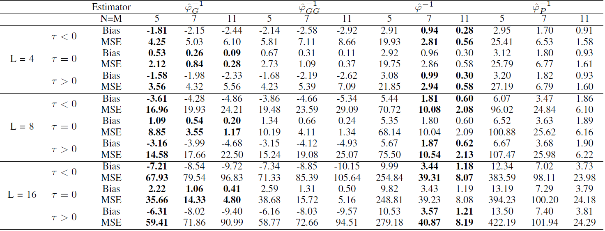
ENL estimated curves from simulated data
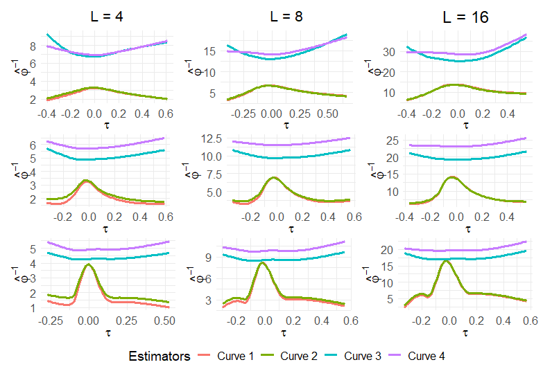
SAR intensity images
 San Francisco intensity SAR image from the HH polarization channel
San Francisco intensity SAR image from the HH polarization channel
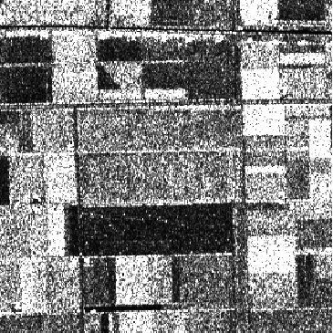 Flevoland intensity SAR image from the HH polarization channel
Heatmap and categorization of Moran’s index
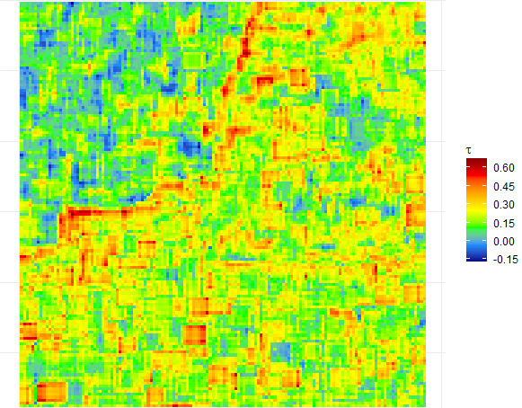
Heatmap of the Moran index \(\tau\) of the San Francisco Bay area
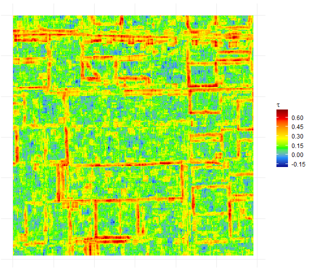
Heatmap of the Moran index \(\tau\) of the Flevoland image
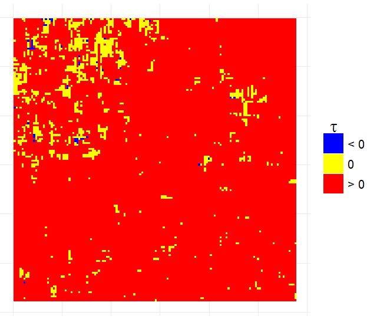
Categorizing \(\tau\) signs according to the Moran test for the San Francisco Bay area
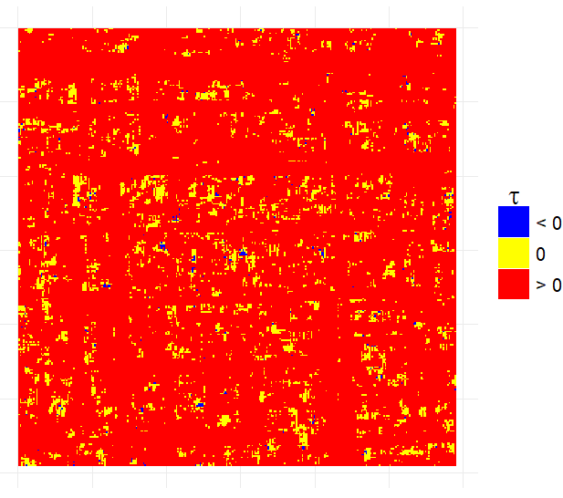
Categorizing \(\tau\) signs according to the Moran test for the Flevoland image
Heatmap of the estimates of the ENL estimators on the San Francisco SAR image.
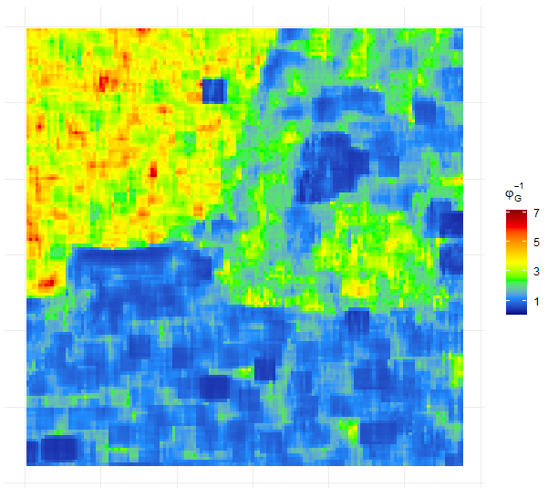
Local ENL estimates of the \(\hat{\varphi}_G^{-1}\) estimator
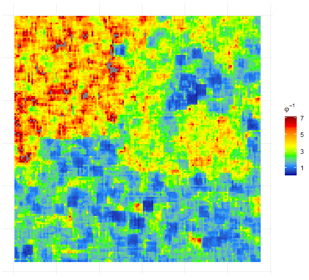
Local ENL estimates of the proposed \(\hat{\varphi}^{-1}\) estimator
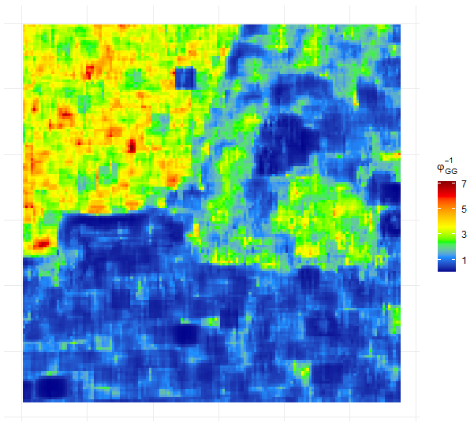
Local ENL estimates of the \(\hat{\varphi}_{GG}^{-1}\) estimator

Local ENL estimates of the proposed \(\hat{\varphi}_P^{-1}\) estimator
Heatmap of the estimates of the ENL estimators on the Flevoland SAR image.
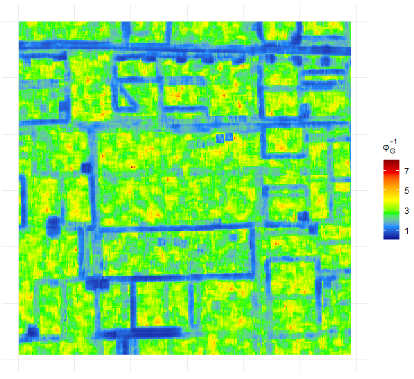
Local ENL estimates of the \(\hat{\varphi}_G^{-1}\) estimator
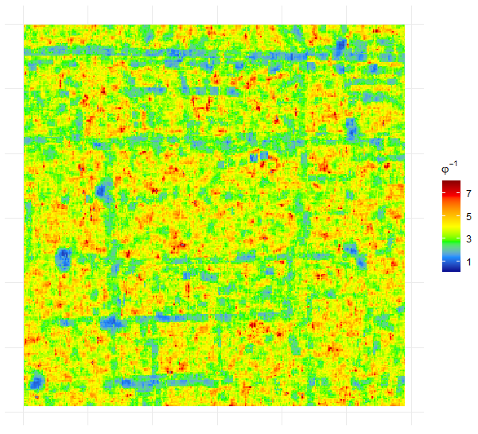
Local ENL estimates of the proposed \(\hat{\varphi}^{-1}\) estimator
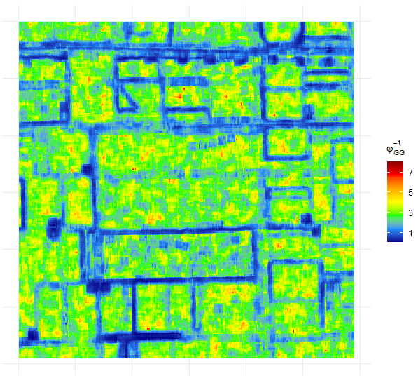
Local ENL estimates of the \(\hat{\varphi}_{GG}^{-1}\) estimator
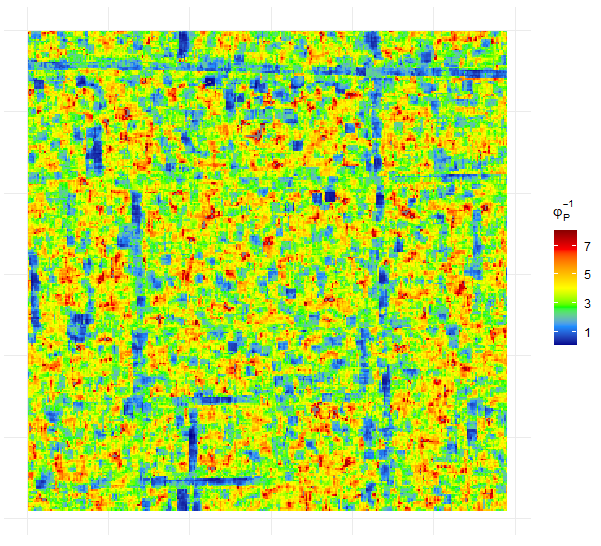
Local ENL estimates of the proposed \(\hat{\varphi}_P^{-1}\) estimator
Mean Square Error of Estimates
| Estimator | San Francisco | Flevoland |
|---|---|---|
| \(\hat{\varphi}_G^{-1}\) | 5.3410 | 2.6855 |
| \(\hat{\varphi}_{GG}^{-1}\) | 6.9560 | 3.3059 |
| \(\hat{\varphi}^{-1}\) | 3.5610 | 0.9442 |
| \(\hat{\varphi}_P^{-1}\) | 3.7885 | 1.9845 |
ENL estimated curves for both images
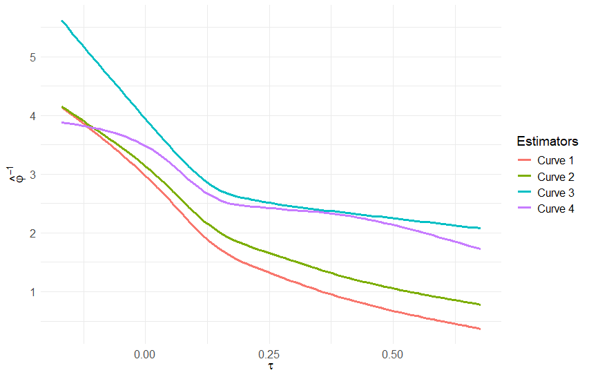 Curve 1 - \(\varphi_{GG}^{-1}\), Curve 2 - \(\varphi_{G}^{-1}\), Curve 3 - \(\varphi^{-1}\), Curve 4 - \(\varphi_{P}^{-1}\) on San Francisco bay area SAR image
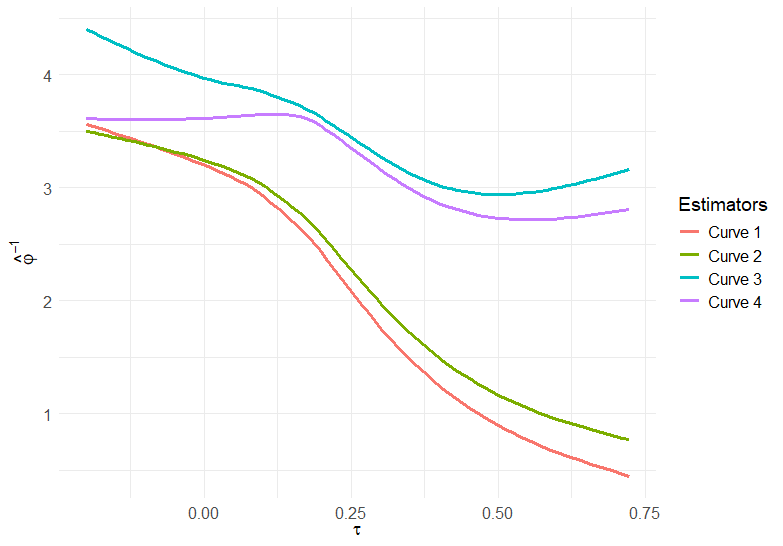 Curve 1 - \(\varphi_{GG}^{-1}\), Curve 2 - \(\varphi_{G}^{-1}\), Curve 3 - \(\varphi^{-1}\), Curve 4 - \(\varphi_{P}^{-1}\) on Flevoland SAR image
Conclusion
- Impact of spatial autocorrelation on the ENL.
- At least \(92\%\) of the pixels on the analyzed SAR images were correlated.
- New estimators for the ENL accounting for correlated data.
- The proposed estimators has lower MSE than conventional estimators.
- The proposed estimators have eliminated the underestimation problem caused by positive spatial correlation.
Summarizing results
- Proposing the 2D G\(\Gamma\)-ARMA model, its theoretical properties, and physical interpretation.
- Impact of spatial autocorrelation on the ENL.
- New estimators for the ENL accounting for correlated data.
Contributions
- Papers in development
- Generalized gamma 2D-ARMA process: an analysis of the Brazilian floods in Rio Grande do Sul
- Estimation of the equivalent number of looks on correlated SAR image
- Statistical Analysis of Geodesic Roll-invariant Indexes from PolSAR Data over Crop Fields, with collaboration of Prof. Avik Bhattacharya, Prof. Abraão D. C. Nascimento, and Prof. Alejandro C. Frery.
- Conference papers
- W. B. F. Da Silva, A. D. C. Nascimento and F. J. A. Cysneiros, “Analysis of Variance under Log-Symmetric Family for SAR Images,” IGARSS 2024 - 2024 IEEE International Geoscience and Remote Sensing Symposium, Athens, Greece, 2024 (Da Silva, Nascimento, and Cysneiros 2024)
- W. B. F. Da Silva, A. D. C. Nascimento and F. J. A. Cysneiros, “Modelo de regressão aplicado à dados de radar de abertura sintética,” CNMAC 2024 - 2024 Congresso Nacional de Matemática Aplicada e Computacional, Porto de Galinhas, Brazil, 2024
Awards
- Top 10 most-cited papers published by Environmetrics in 2023, Wiley.
Future works
- Concrete future works
- Empirical order identification of the autoregressive or moving average parameters on spatial G\(\Gamma\)-ARMA model
- Goodness-of-fit test for the spatial G\(\Gamma\)-ARMA model.
- Possible future works
- Object detection in SAR imagery using design of experiment based on the spatial G\(\Gamma\)-ARMA model (turning the conference papers into a journal article).
- Change detection in SAR imagery based on the spatial G\(\Gamma\)-ARMA model.
- A statistical approach of the Mellin transform for investigating ratio residuals in speckled data.
Thank you all for your time!
References
Department of Statistics - CCEN/UFPE - April 2025